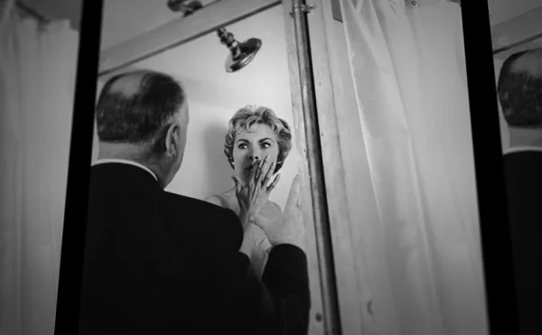
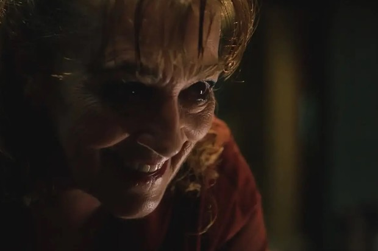
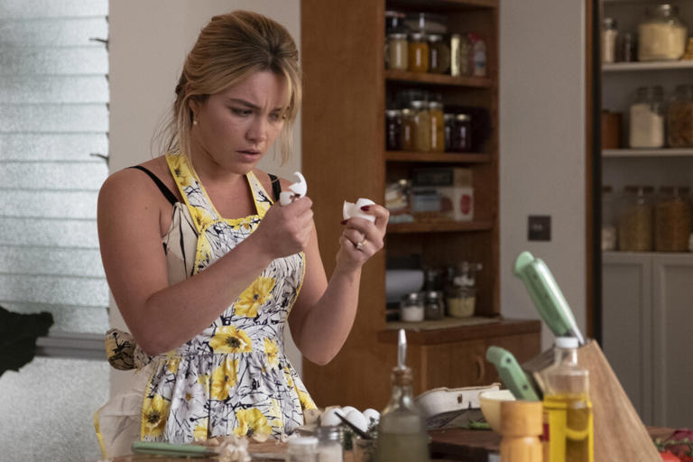
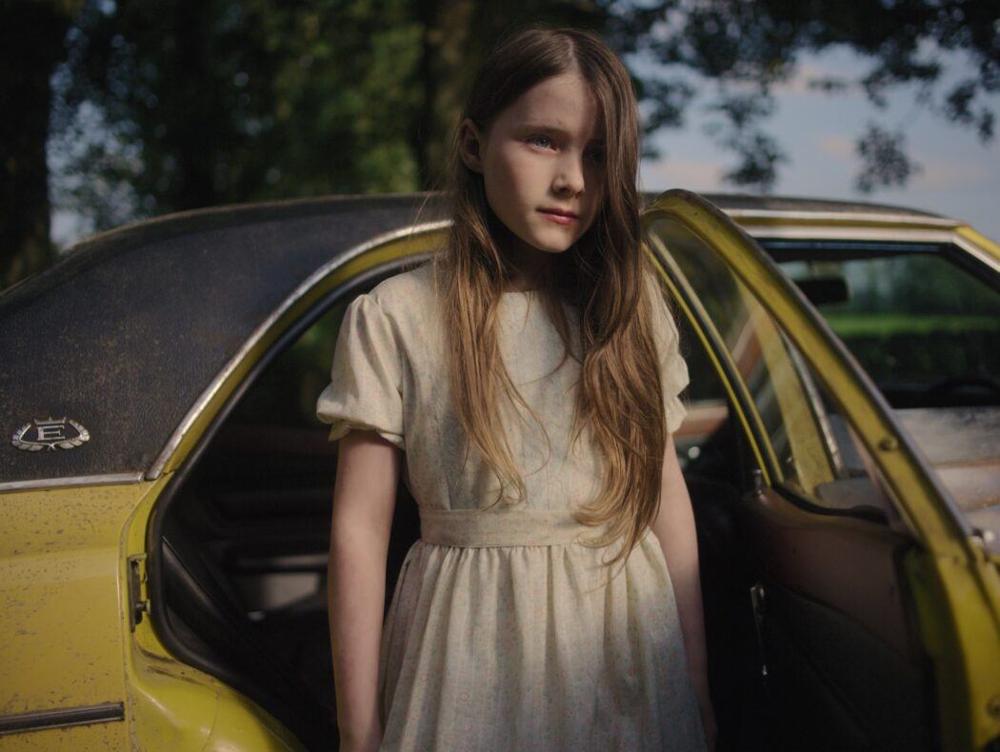

22-27 julio · Palacio Miramar
Un festival dedicado al thriller, al misterio y a las historias que se quedan contigo después de los créditos. Proyecciones, coloquios y experiencias para vivir el cine con otra tensión.

Qué es FRAME
FRAME combina grandes referentes del suspense con programación cultural, mesas redondas y experiencias participativas. La web ahora guía mejor hacia las películas y la compra de entradas.
Programación destacada
Última hora

La actriz protagoniza “Vieja Loca”, un thriller psicológico que ha generado conversación tras su paso por Cannes.
Ver programación
Una selección de historias donde el suspense se mezcla con crítica social, identidad y presión colectiva.
Descubrir películas
El festival abre espacio a relatos incómodos, corrupción y secretos familiares con mirada contemporánea.
Ubicación y contactoActividades